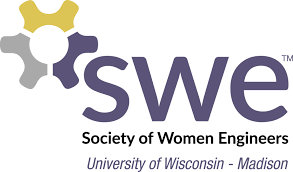
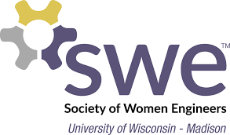
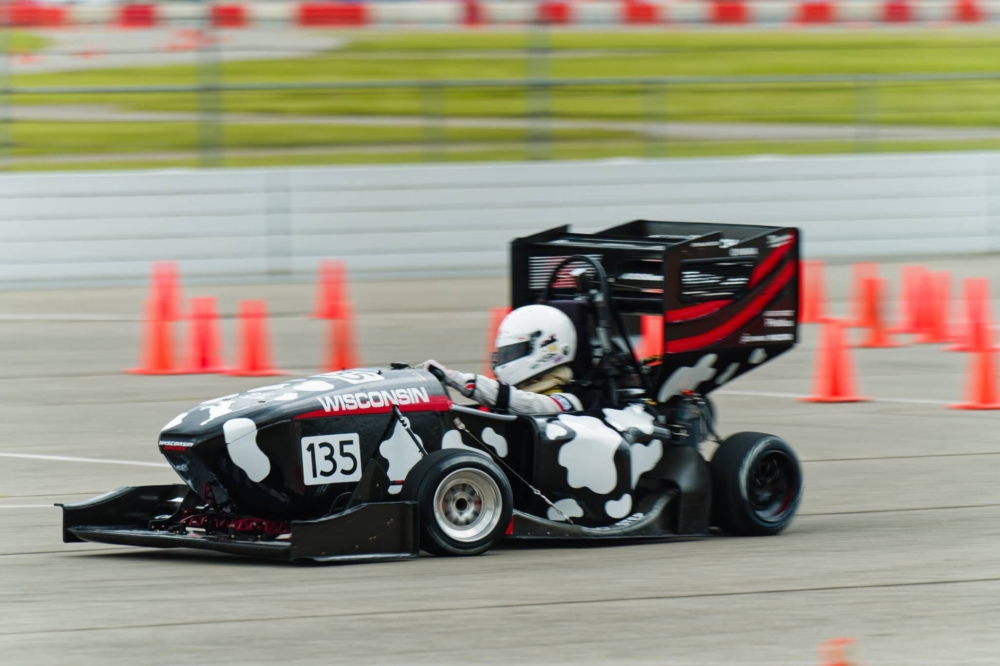
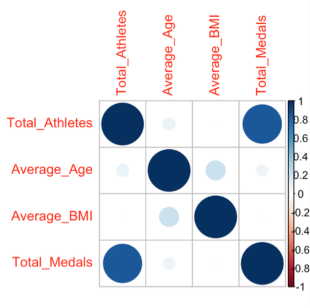
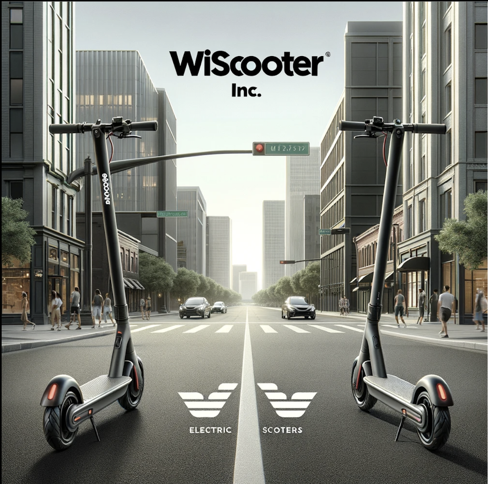

Developing an app for PepsiCo to automate their notifications for replacing the canisters and trash cans on the assembly line.
Won the Distiguished Member award.

Utilized carbon fibre to manufacture the body of the Combustion car.
Designed the end cap of the front wing using SolidWorks.
Conducted cost reporting for the team.

Used regression analyis to explore the relationship that physical and mental influences have on Olympic performance.

Designed a manufacturing floor layout, allowing WiScooter to produce 5 scooter models in the same facility at El Paso Texas.

Here are some projects I did in Java.
These are some optimization problems that I enjoyed solving using Julia